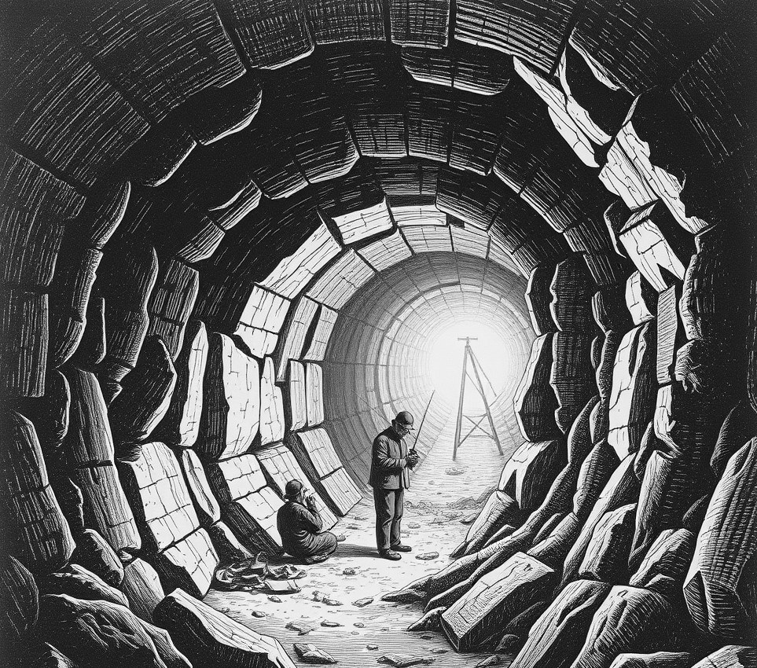

VAULT FOUR . 4 December 4793

Dozens of teenagers gathered beneath the main circulation duct in Vault Four on Thursday, waiting for the ceiling to leak. They were holding silent vigil for the rare drop of grey condensation. Known locally as a sky-baptism, the drop fell every forty minutes as air-scrubbers cycled human breath against cold steel. "It feels profoundly existential," explained Tenzin Kido, eighteen, wearing a soggy tunic fashioned from filter mesh. "You realise the roof is not structural cladding, but a sensitive entity weeping for our sins." The spiritual trend has infuriated elder residents who spent four gruelling decades sealing joists with expanded foam to prevent ice rot. "We fought two localised civil wars to keep this bunker dry," said chief pipe welder Nadira Ocampo, brandishing a caulking gun. "Now my granddaughter sits in a grey puddle writing miserable poetry about atmospheric moisture. She even refuses her algae paste unless it is diluted with ceiling sweat." Tension escalated on Monday when youths jammed stolen insulation into drainage traps. The resulting backlog forced three thousand litres of wash-water through joints, creating fog across Sector Seven. Facility engineers cleared the blockage yesterday using heavy suction equipment, effectively restoring total dryness to the sector. Disconsolate youth leaders declared a week of mourning for their vanished climate. They briefly gathered beneath an overheating pump in Sector Nine to contemplate their loss. By Friday morning, however, the movement found fresh hope when the communal sewage recycler began leaking directly above the mess hall.